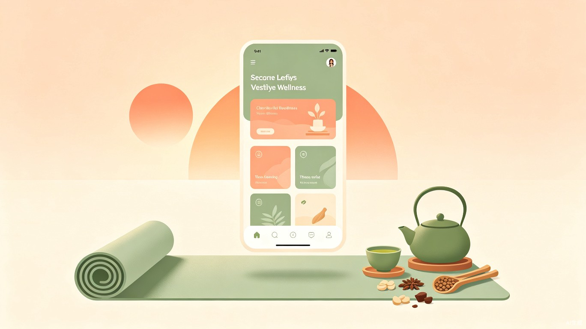

基于《黄帝内经》的AI养生习惯追踪应用，用代码传承千年中医智慧
现代人生活节奏快、压力大，养生往往停留在"知道但做不到"。生活习惯小助手是一款基于《黄帝内经》等14部经典养生著作的AI习惯追踪PWA应用，将千年中医智慧转化为可执行的每日健康计划。
从饮水提醒到子午流注时辰养生，从情志记录到五劳防护，这款应用不只是打卡工具，更是一个随身携带的数字养生顾问。
六大模块覆盖从日常起居到情绪管理的全场景健康需求。
每日打开即见公历+农历日期、季节养生建议、节气Badge、随机养生名言。点击名言出处直接跳转14部参考文献。
8杯可视化进度、水平时间线计划、2小时未喝水智能提醒、本周饮水趋势分析。杯数+毫升双单位显示。
记录怒喜思悲恐五种情绪，实时对照五脏-情志关系，提供《素问·阴阳应象大论》情志相胜调节建议。
久视伤血→闭目养肝、久坐伤肉→起身活动……将《素问·宣明五气篇》的五劳理论转化为现代场景防护动作。
12时辰对应12经络，点击任意时辰查看当令脏腑与养生建议，帮助用户理解"什么时间该做什么"。
四季养生+五色饮食+情志调理+五劳防护，一键导入7个子包共34个习惯，零基础开始中医养生。
本项目全程在 TRAE IDE 中开发，深度使用 AI 辅助编程。从《黄帝内经》原文的数字化整理到34条健康建议的文言文-白话文对照，从农历日期算法到节气判断逻辑，AI不仅是编码助手，更是跨学科知识桥梁。
HTML+CSS+JS 单文件架构，Service Worker离线缓存，可安装为桌面/手机应用
TRAE AI 完成代码生成、Bug修复、功能迭代、文言文翻译、文献整理
Mobile-first 适配，底部面板交互，支持手势滑动关闭
"法于阴阳，和于术数，食饮有节，起居有常，不妄作劳。"
中医养生经典浩如烟海，但现代人很难系统学习。《黄帝内经》《遵生八笺》《老老恒言》等著作中的智慧，往往因为文言文门槛高、理论体系复杂而被束之高阁。
这个项目的初衷很简单：让AI成为传统养生文化与现代生活之间的翻译器。每一条健康建议都标注了原文出处，点击即可查看完整参考文献。用户在打卡的同时，也在不知不觉中学习中医养生知识。
这不仅是习惯追踪工具，更是一个可交互的数字化中医养生知识库。
当前版本已覆盖核心功能，未来计划加入中医体质辨识（九种体质测试）、AI舌诊分析、个人健康数据趋势预测等功能。最终目标是打造一个人人都能用的AI中医健康助手。